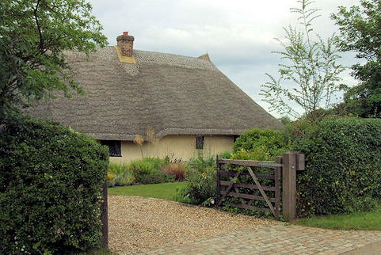

Tuesday, June the 4th, 2013
back to: title, date or indexes
I am reading A Double Life, Sarah Burton's 2003 biography of Charles and Mary Lamb, and have been delighted by a couple of names mentioned therein.
One of the Lamb's relatives lived in a Hertfordshire cottage called, splendidly, Button Snap. It is still there, a listed building, so I may have to go and violently drive out the current tenants or owners and move in myself.
Gone, however, is a pub at 17 Newgate Street in the City of London called The Salutation And Cat, where Charles Lamb used to get squiffy with his pal Samuel Taylor Coleridge. According to Walter Thornbury in Old And New London (1878), the pub was named after an “odd combination of two incongruous signs”. Over the road was another pub with the equally intriguing name of The Magpie And Stump.
Both Sarah Burton and Walter Thornbury remind us of Coleridge's youthful folly in enlisting in the army. He did so under the pseudonym Silas Tompkin Comberbache. Some years ago I linked to a site (now vanished*) which contained this brief reference to his military service:
As a rider, his attempts ended frequently in disaster: “Within this week I have been thrown three times from my Horse, and run away with to no small perturbation of my nervous system.” He developed saddle sores, “dreadfully troublesome eruptions, which so grimly constellated my Posteriors.”

Button Snap
*ADDENDUM : Not so. There is a (revised) link to the site in the comments. Thanks to Dave Lull and others who pointed out my error.